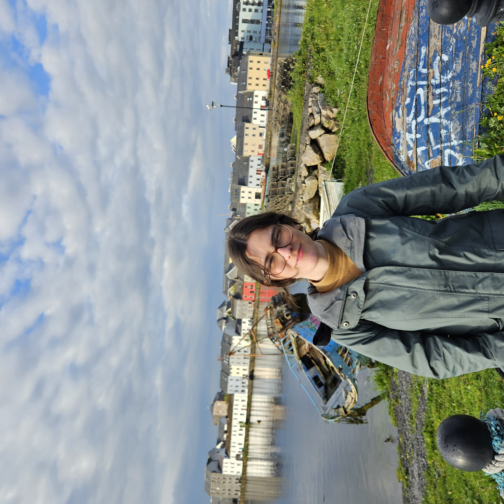

My name is Amanda Dekker and I am 23 years old. I am Brazilian and Dutch. I grew up in Brazil, and at 15 years old, I moved to Canada, more specifically, a small town in the middle of the Rocky Mountains called Canmore. I later moved to Vancouver to study English Literature at the University of British Columbia (UBC), and that's where I've lived for the last five years. Here's the link to: the website for the program.
During my undergrad, I published a few pieces for UBC's student newspaper, the Ubyssey, in the blog/humour section.
Languages I am fluent in:
Favourite books:
| Prior knowledge | This is my first time learning HTML. A particularly relevant course I took in my undergrad was History of the Book. I learned how to manage, study, and write about books from the Rare Books and Special Collections (RBSC) at the University of British Columbia’s library. Every two weeks or so, the professor would show the class a range of manuscripts pertaining to the week’s module. I have also taken a range of medieval literature courses (such as a medieval romance seminar and a Chaucer class). |
| Expectations | I hope to learn more about the publishing world. |